Absent from Chronic
2026-07-15
Goals of the Project
Absent from Chronic aims to demonstrate a responsible use of AI in reproducible research and emerging tools for collaboration in data science. We encourage the use of AI-assistants to interrogate our research artefacts.
| Role | Who | Contributes | Receives |
|---|---|---|---|
| Data Scientist | Andriy Koval | Delivers on the request — pipeline, analysis, reporting | A request precise enough to be answerable, and infrastructure that holds |
| Researcher | Marc-André Blanchette | Formulates the information request and judges whether the answer is scientifically meaningful | An analytic product built to the question actually asked |
| Support | Oleksandr Koval | DevOps: environments, harnesses, reproducible builds | Mentorship in data science and analytics |
Each participant gives what they hold and takes what they lack. The project is the medium in which that exchange is tested.
Addressed Topics
Absent from Chronic Project:
What chronic conditions are related to productivity loss?
What predictors survive the LASSO penalty?
Here’s a research proposal — address this information request.
- Business Context — the problem worth solving
- Data and Preparation — how the rectangle was earned
- Model Development — estimation and selection
- Operationalization — putting it where it can be used
- Outcomes — what was produced, what was learned
- Leadership & Project Management — roles, decisions, accountability
1. Business Context — Research Question
How do chronic conditions contribute to the loss of productivity?
The Loss of Productivity (LOP) module of the Canadian Community Health Survey (CCHS) asks respondents to report the number of days they were absent from work in the previous three months for any health reason, including chronic conditions.
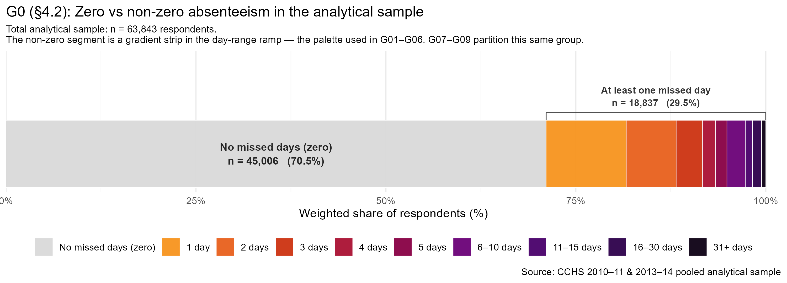
1. Business Context — Why
Chronic conditions are not rare among working Canadians — they are ordinary.
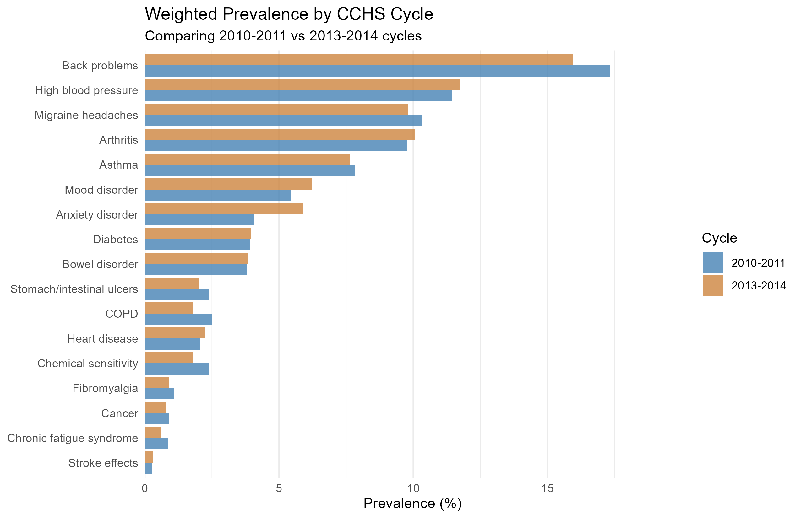
63,843 respondents in the analytic rectangle, representing — once the pooled survey weights are applied — 17,844,913 employed Canadians aged 15–75.
Back problems reach roughly 17%, high blood pressure and migraine near 10%, and the ranking barely moves between the 2010–2011 and 2013–2014 cycles.
A condition carried by one worker in six is a workforce question, not only a clinical one.
1. Business Context — Project Objectives
| # | Objective | Delivered as | Proposal § |
|---|---|---|---|
| 1 | Measure absenteeism and its chronic-condition share | Outcome and sensitivity outcome, both from the LOP module | 4.1 |
| 2 | Establish which factors predict absenteeism, adjusted | LASSO selection, then negative binomial estimation | 5.4–5.5 |
| 3 | Test whether predictors differ by condition | One model per chronic condition | 5.7 |
| 4 | Test whether predictors differ by sex | Female and male models, compared | 5.9 |
| 5 | Make the whole chain re-runnable | Reproducible script, raw import to final tables | 6 |
Objectives 1–4 are stated as quantities to be estimated, not as accuracy targets. Objective 5 is what makes the other four checkable by someone else.
2. Data and Prep — Measure of Interest
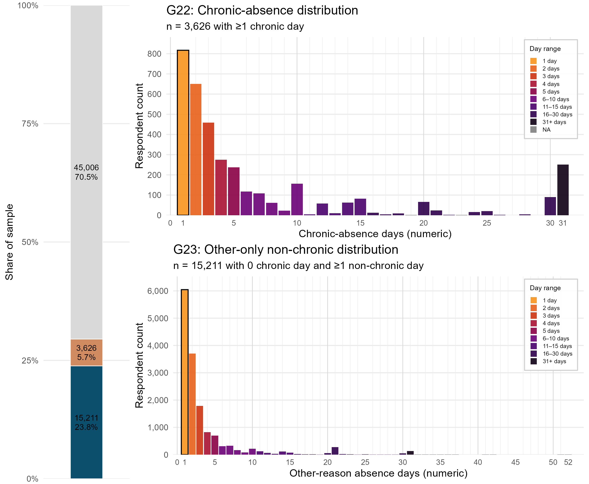
2. Data and Prep — Predictor Set
| Domain | Included | Excluded | Total | Representative examples |
|---|---|---|---|---|
| Exposure | 16 | 1 | 17 | Arthritis Back problems Mood disorder Migraine |
| Facilitating | 11 | 1 | 12 | Household income Work schedule Occupation Work stress |
| Needs | 10 | 0 | 10 | Self-perceived health Injured past 12 months Needs help: housework |
| Predisposing | 12 | 1 | 13 | Age group Sex Education Immigration status |
Candidate counts by Andersen domain. Exclusions are evidentiary, not convenience: cc_copd is asked only of respondents aged 35+, has_family_doctor is optional content missing outside Ontario in 2010–2011, and dhhgage duplicates the age recode already in the set.
3. Model Dev — Scale of the Criterion
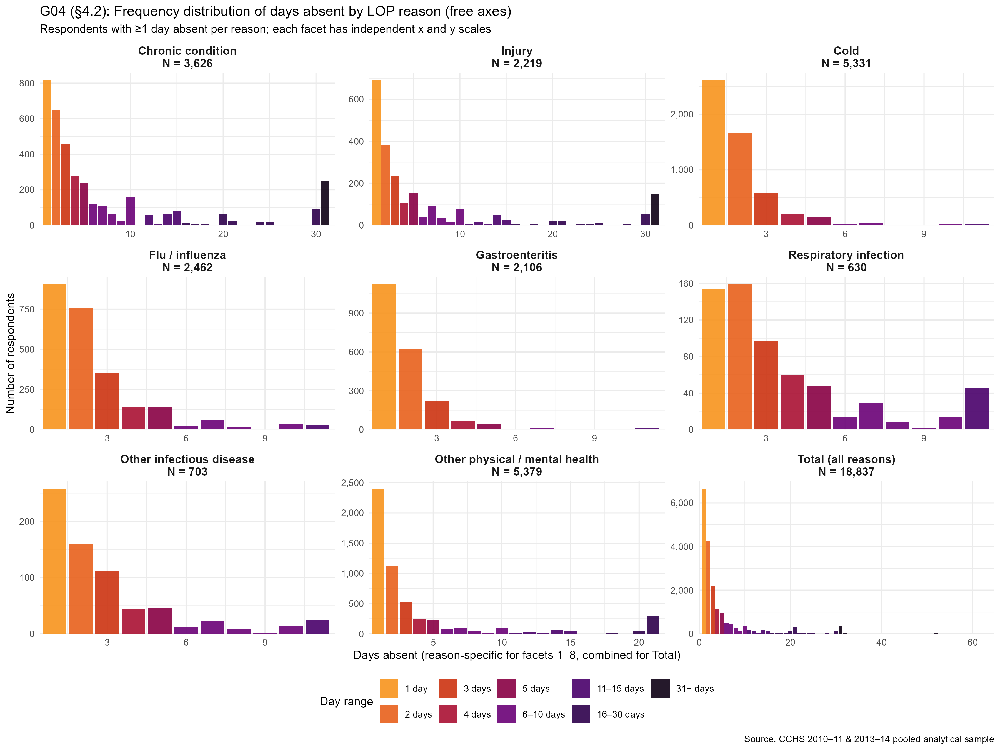
3. Model Dev — Link & Transform
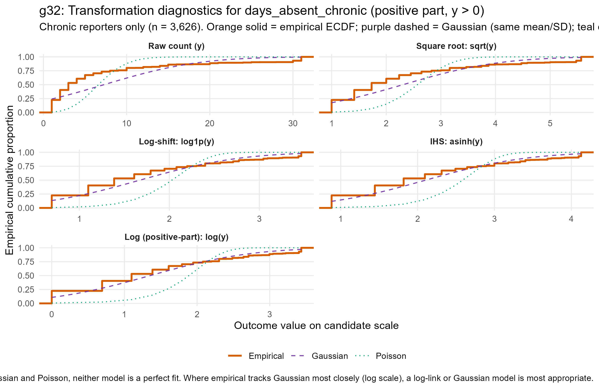
3. Model Dev — Link & Transform
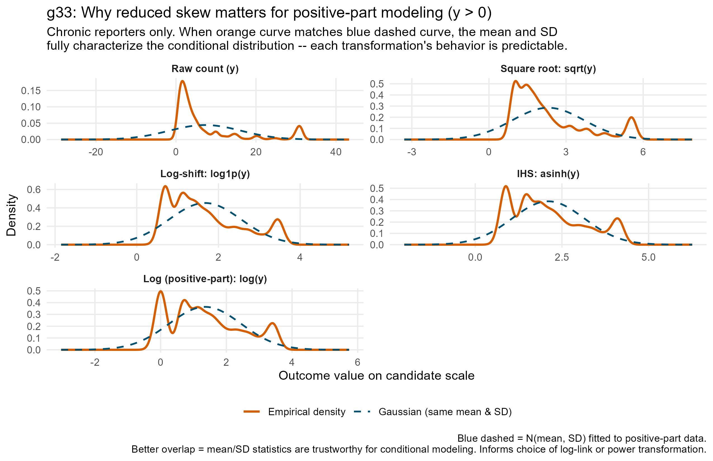
3. Model Dev — Why ZINB
What the diagnostics say
Count nature — days absent is a non-negative integer. log1p and sqrt can be made to look Gaussian, but they distort the mean–variance relationship and complicate back-transformation. A count-native likelihood preserves interpretability.
Overdispersion — the heavy right tail and the gap between P90 and P99 put variance far above the mean. Poisson assumes they are equal; the negative binomial adds a dispersion parameter that absorbs the excess. Without it, standard errors are artificially narrow.
Excess zeros from a dual process — 94.3% of the sample reports zero chronic-absence days, and those zeros are not all alike.
How the model is built — two parts
Part 1 · Inflate (logistic) — the probability of being a structural zero: a worker who could not have generated chronic-absence days at all.
Who is at risk of any absence?
Part 2 · Count (negative binomial, log link) — the expected number of days among those at risk, with dispersion parameter .
Among those at risk, what drives higher day counts?
Treating both kinds of zero alike under a plain NB underestimates and biases the count coefficients upward. The mixture separates the two questions inside one model.
3. Model Dev — Fitting Conditions
The proposal’s §5.4 names four models. They are not four fits — they are two fits read at two penalties each. cv.glmnet returns an entire path; lambda.min and lambda.1se are two points on it.
| Model | Role | Self-perceived health | Penalty rule | Columns offered | λ | Columns kept |
|---|---|---|---|---|---|---|
| Model 1 | Primary | excluded | lambda.1se |
88 | 0.1936 | 10 |
| Model 2 | Secondary | included | lambda.1se |
100 | 0.2128 | 12 |
| Model 3 | Sensitivity | excluded | lambda.min |
88 | 0.0301 | 46 |
| Model 4 | Sensitivity | included | lambda.min |
100 | 0.0275 | 57 |
The two lambdas
lambda.min minimises cross-validated deviance — permissive, keeps everything that helps prediction.
lambda.1se is the largest penalty within one standard error of that minimum — parsimonious, keeps only what CV can defend.
The perceived-health toggle
Three self-rated health measures are withheld from Models 1 and 3 by design: the proposal expects them to absorb signal carried by the individual conditions.
Withholding them makes the design matrix 88 columns wide; offering them makes it 100.
Because the penalties are read off one path, the parsimonious and permissive specifications are nested, not merely similar.
3. Model Dev — Cross-Validated Deviance
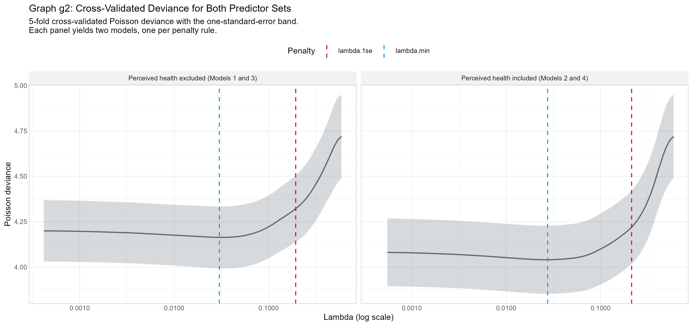
g2 · Variable Selection with Lasso (model-1)
Both curves are shallow to the left of their minima. That flatness is what makes the one-standard-error rule bite: across a wide band of penalties, cross-validation genuinely cannot tell the models apart.
3. Model Dev — Coefficient Paths
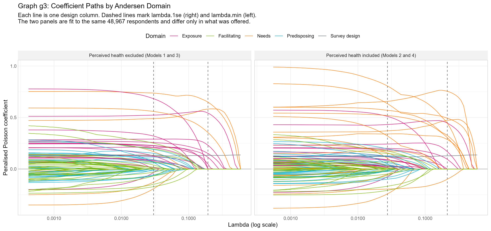
g3 · Variable Selection with Lasso (model-1)
Same 48,967 respondents in both panels; they differ only in what was offered.
Needs and Exposure survive furthest to the right — they are the last to be shrunk to zero.
3. Model Dev — What Survived
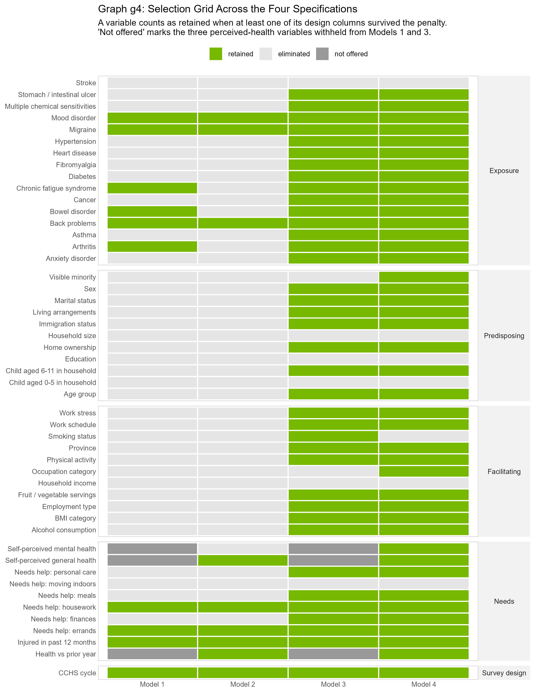
| Model | Perceived health | Penalty | Offered | Retained | Variables |
|---|---|---|---|---|---|
| Model 1 | excluded | lambda.1se |
88 | 10 | 10 |
| Model 2 | included | lambda.1se |
100 | 12 | 9 |
| Model 3 | excluded | lambda.min |
88 | 46 | 38 |
| Model 4 | included | lambda.min |
100 | 57 | 42 |
One expectation is inverted. The proposal reasoned that offering self-rated health would shrink the retained set. Absorption does occur — the exposure domain loses variables — but the three perceived-health measures themselves enter, and they more than replace what they displaced.
3. Model Dev — Two Other Scenarios
The proposal asks the same selection procedure to run twice more: inside each chronic condition (§5.7–5.8) and separately for women and men (§5.9–5.10).
Model 2 — condition-specific. Seventeen subgroups, one model each. Reading down a column gives one disease’s verdict; reading across a row finds variables that predict absence whatever the condition — needing help with errands, meals and housework, mood disorder, migraine, back problems, marital status.
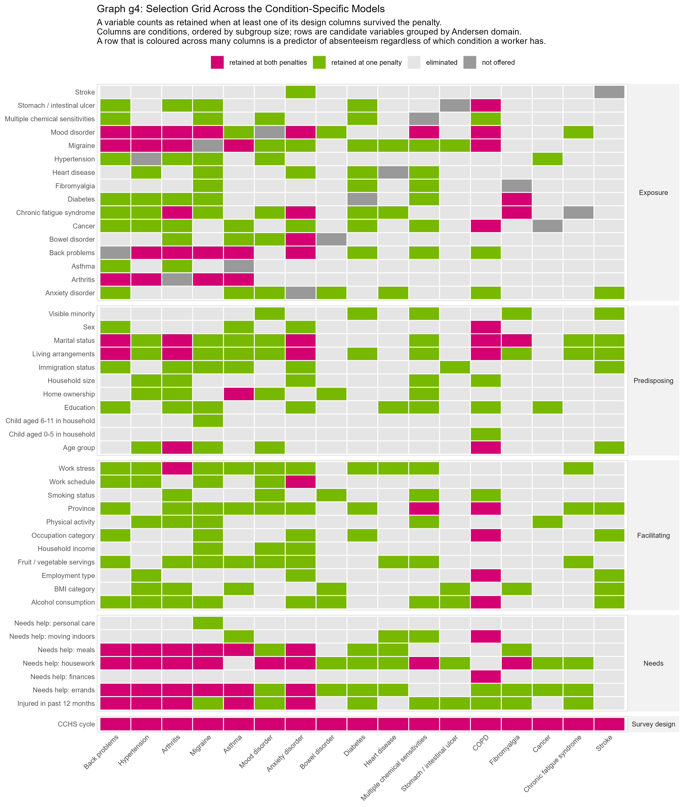
Model 3 — sex-stratified. Female against male within each of the four specifications. Under the parsimonious penalty both sexes converge on a short shared list; only under lambda.min does the divergence Section 5.9 asks about become visible — and much of it sits in the Predisposing and Facilitating domains, not in the diseases.
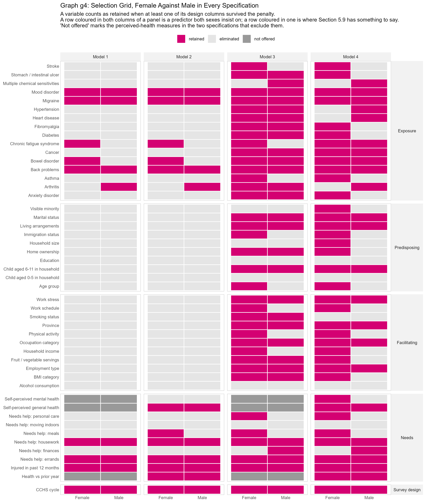
3. Model Dev — Model Performance
| Model | Terms | Held-out C | McFadden | RMSE | Terms when selection re-runs per fold |
|---|---|---|---|---|---|
| Model 1 | 10 | 0.613 | 0.019 | 4.02 | 8 – 38 |
| Model 2 | 15 | 0.630 | 0.027 | 3.98 | 15 – 31 |
| Model 3 | 67 | 0.640 | 0.021 | 4.23 | 68 – 83 |
| Model 4 | 81 | 0.653 | 0.027 | 4.46 | 81 – 91 |
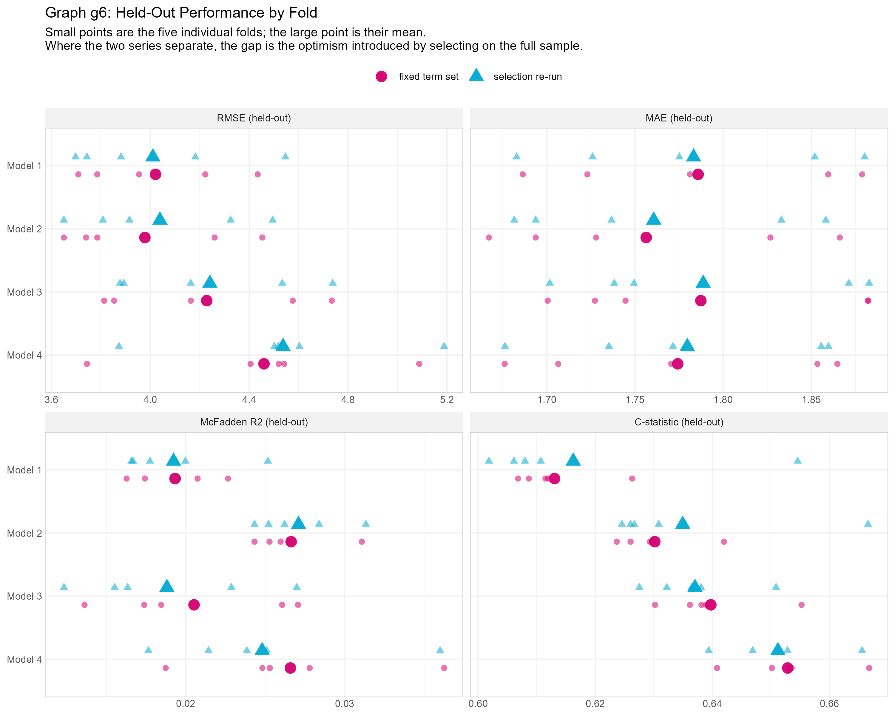
- Discrimination is modest. Held-out C climbs only from 0.613 to 0.653 as the model grows from 10 terms to 81. Eight times the complexity buys four points of ordering.
- The C-statistic is narrower than it looks. With 69.3% of respondents at zero days, only 49.1% of respondent pairs are comparable. C measures ordering among those who differ in days absent — not absence against none.
- McFadden of 0.02–0.03 is small but not anomalous for individual-level count data; the model describes population-level gradients, not individual futures.
- RMSE gets worse as terms are added — 4.02 for Model 1 against 4.46 for Model 4. The larger specifications fit the tail, not the mass.
- Selection cost almost nothing in optimism. Fixed term set and selection-re-run differ in the third or fourth decimal, several with the wrong sign. At ~49,000 respondents, selecting on the full sample is nearly free.
- But the selected set is unstable. Model 1 names 10 variables on the full sample and between 8 and 38 across training folds. Which variables LASSO named is substantially a function of which four-fifths it saw.
- Between-fold spread is the honest error bar. A gap between two models smaller than the scatter within either of them is not a difference.
4. Operationalization — Pipeline (see Guide)
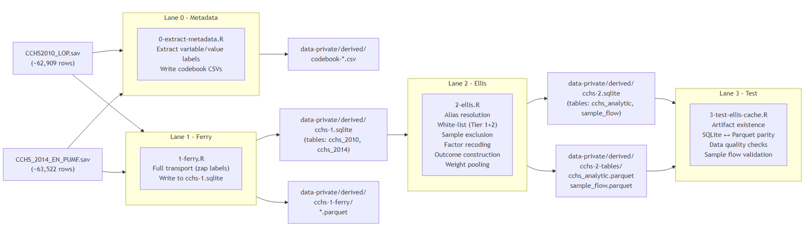
Lane 0 · Metadata
codebook-variable-labels.csv codebook-value-labels.csv codebook-cycle-comparison.csv codebook-research-vars-check.csv
Lane 1 · Ferry
cchs-1.sqlite — cchs_2010, cchs_2014 cchs-1-ferry/*.parquet INPUT-manifest.md
Lane 2 · Ellis
cchs-2.sqlite — cchs_analytic, sample_flow cchs_analytic.parquet (63,843 × 70) sample_flow.parquet CACHE-manifest.md
Lane 3 · Test
24 assertions — artifact existence, SQLite-to-parquet parity, data quality, sample-flow validation pipeline-validation.dcf
4. Operationalization — Version Control
Version control is not “the code is in Git.” It is a chain in which every displayed number traces to a script, every script to a declared input, and every change to a dated record. Let’s exemplify with specific scenario: on 2026-08-01 the pipeline admitted a variable it had previously reported as unavailable.
| # | Hop | Artifact | What the record says |
|---|---|---|---|
| 1 | Claim retracted | CACHE-manifest.md |
“No house-ownership construct exists in the PUMF.” That claim was wrong and has been retracted. |
| 2 | Input verified | INPUT-manifest.md |
DHH_OWN present in both cycles; 99.74% coverage; every province × cycle cell above 99.3% |
| 3 | Hazard declared | INPUT-manifest.md |
Encoding differs by cycle — 2010–11 stores not-stated as system missing, 2013–14 as codes 7 / 8 / 9 |
| 4 | Transformation written | 2-ellis.R |
1 → Owner, 2 → Renter, everything else → NA — explicitly not != 1 ~ "Renter" |
| 5 | Contract updated | CACHE-manifest.md |
New row home_ownership ← DHH_OWN; Owner 50,101 / Renter 13,576 |
| 6 | Shape restated | pipeline.md |
Analytic table 63,843 × 70 — 70 columns since the admission; 69 before |
| 7 | Re-verified | 3-test-ellis-cache.R |
Lanes 0–3 re-run; 24 assertions, 0 failed |
All seven artefacts are mirrored into the site’s Appendix, so the trace can be checked without visiting the source repository. The change was not finished when the recode compiled — it was finished when the manifest, the column count, and the assertion suite all agreed again. The fidelity audit’s current status is reported as WARN, not PASS, because a check that never fails is not a check.
4. Operationalization — Harness
Pipeline Orchestra
Engineering: raw data → trustworthy rectangle
Agent @pipeline-engineer
Writes to manipulation/
Flow source → ferry → ellis → served
Governs transport, transformation, and validation of incoming data
Accountability INPUT-manifest records what arrived; CACHE-manifest records what is served
Composing Orchestra
Reporting: clean data → analytical artifact
Agent @report-composer
Writes to analysis/
Flow contract → .R laboratory → .qmd publication
Governs monothematic engagement: one question, one folder, one artifact family
Accountability report-contract anchors scope; artifacts are numbered and inventoried
Publishing Orchestra
Publishing: existing artifacts → curated site
Agents @interviewer + @writer
Writes to _frontend-N/
Flow RAW → EDITED (content/) → PRINTED (_site/)
Governs editorial selection, audience register, and protocol fidelity
Accountability TRANSFORM_LOG records every change; fidelity report is the gate
Three agent harnesses, one per workspace directory, each with its own agent, its own flow, and its own accountability artefact. They are described at length in a companion deck, Minding the Agents, which walks each orchestra through its full cycle.
5. Outcomes — Three Takeaways
- Function beats diagnosis. Needing help with errands (RR 2.48) outranks every chronic condition in the model.
- Mind and pain, not organ. Mood disorder (2.12), bowel disorder (1.65), migraine (1.63), back problems (1.44) survive — hypertension, diabetes, heart disease, cancer do not.
- The ceiling is the finding. McFadden under 0.04, held-out C of 0.61. Forty-eight variables of cross-sectional self-report explain very little of who misses work.
5. Outcomes — Everything on One Row Axis
What predictors exist, how each relates to the outcome on its own, which survive the penalty, and what they estimate once fitted among the survivors — five panels, one row order, one x window.
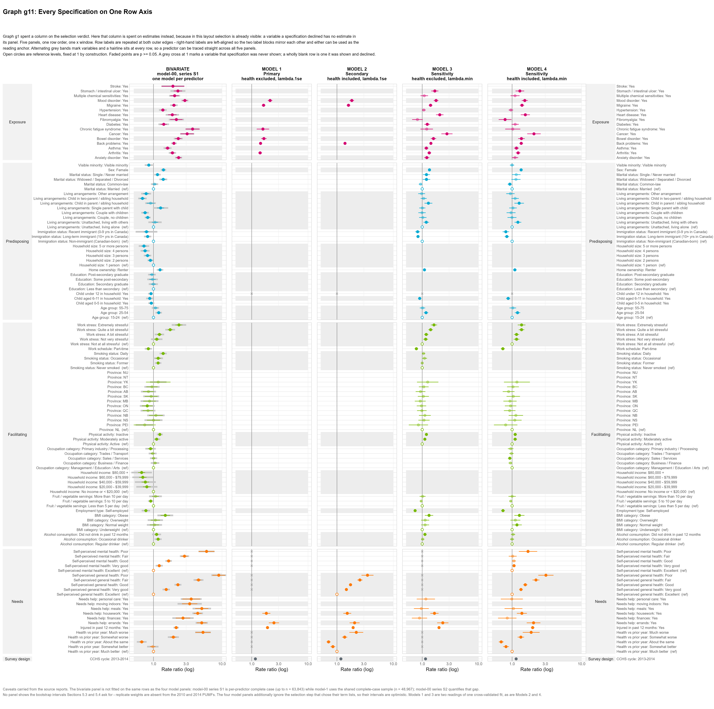
g11 · Story 1: Reading the Four Models (eda-81)
A variable a specification declined has no estimate in its panel — selection is therefore visible without spending a column on it. A blank row was offered and refused; a grey cross was never shown. The axis is log10: the penalty acts on , so RR = 0.5 and RR = 2.0 cost it exactly the same.
5. Outcomes — Limitations & Future Directions
Limitations
- No causal claim. Condition status and days absent are reported in the same interview. No further modelling of two cross-sections changes that.
- No variance instrument as specified. The proposal asks for 500 bootstrap replicate weights; CCHS carries them only from the 2015 cycle. Three substitutes are reported, each a lower bound on the understatement.
- The selected set is unstable. 10 variables on the full sample, 8 to 38 across training folds. “The variables LASSO selected” is not “the variables LASSO would select.”
- Elimination ≠ irrelevance. With 63–93% comorbidity overlap, the likely reading of a dropped term is that a correlated neighbour crowded it out.
- Nineteen requested, seventeen mapped. The manifest records the shortfall rather than rounding it off.
- 24% dropped to complete cases — currently the largest untested threat to external validity.
- Not a prediction instrument. C of 0.61 is no basis for screening, forecasting, or targeting.
Future Directions — in the order the argument implies
- Elastic net over a grid of . The highest-value single change: comorbidity is exactly the situation where L1 misbehaves. Converts a binary retained-or-dropped verdict into a graded one.
- Two-part / hurdle decomposition. Separates whether a worker is absent from how long. Non-zero share and mean days do not move together across subgroups.
- A forest. Settles the ceiling question — same concordance means the limit belongs to the data; better means there is interaction structure the additive form cannot see.
- Condition burden and clusters as exposures. Workers with chronic fatigue syndrome carry 3.3 other conditions on average.
The first three are each one script on the existing frame; the fourth needs one Ellis pass.
What cannot be fixed from here: the direction of the association. That needs longitudinal linkage or an administrative absence record — not a better estimator.
6. Leadership & Project Management
| Role | Who | Contributes | Receives |
|---|---|---|---|
| Data Scientist | Andriy Koval | Delivers on the request — pipeline, analysis, reporting | A request precise enough to be answerable, and infrastructure that holds |
| Researcher | Marc-André Blanchette | Formulates the information request and judges whether the answer is scientifically meaningful | An analytic product built to the question actually asked |
| Support | Oleksandr Koval | DevOps: environments, harnesses, reproducible builds | Mentorship in data science and analytics |
Three collaborators, three institutions, three lanes. Nobody reports to anybody. What holds the project together is not authority but written interfaces — the proposal, the accord, and the publishing contract.
- The plan was written before the data was opened. The proposal fixes variables, exclusion order, four LASSO specifications and their anticipated counts (16 / 9 / 32 / 33). A plan that cannot be failed against is not a plan — this one can, and in two places it was.
- Risk was built into the run, not into a register. No risk register exists, and none was written retrospectively. Instead: 24 assertions in the last lane of every execution, a manifest-versus-Parquet validation skill, a two-tier harmonisation white-list, and backend–frontend separation that keeps microdata out of the site.
- The stakeholder test is what happens when the data refuses. §5.3/5.5/5.7/5.9 require 500 bootstrap replicate weights; the 2010 and 2014 PUMFs carry none. §2.2 names 19 conditions; 17 map. Both shortfalls are written where a reader of the results meets them, not in a footnote.
- The custodian has no lane and a veto. Statistics Canada’s terms of use are why
data-private/exclusion is a control rather than a housekeeping preference. - Lessons. The interface is the deliverable — every blocked lane traced to a handover that lived as an understanding rather than a file. A control that has never failed is not yet evidence — the assertion suite became load-bearing only once it forced a re-verification.
- What I would do differently. Test the variance instrument before committing to the cycles; separate selection from estimation at the design stage; pin the environment exactly rather than by floor.
Thank You!
Questions? Comments?
The authors thank Statistics Canada for the Canadian Community Health Survey, and the Canadian Research Data Centre Network for access to the Public Use Microdata Files.
Appendix
Knowledge is a conversation
The New Model of Communication

Varieties of Analytic Experience
Lies that helps us see the truth
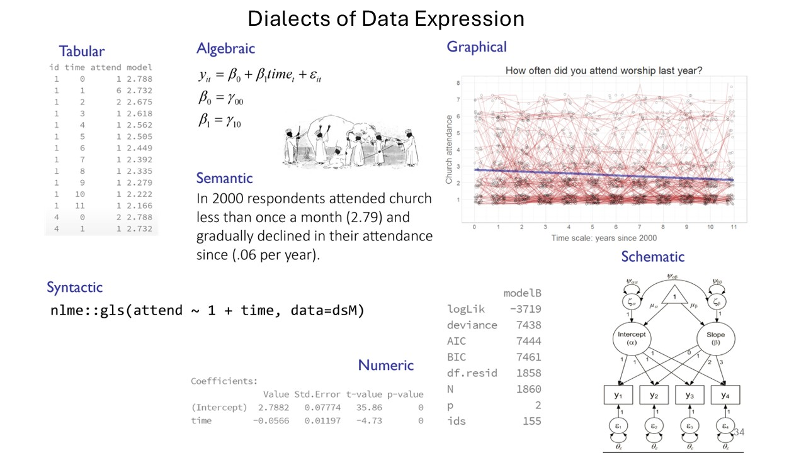
Absent from Chronic | Project overview